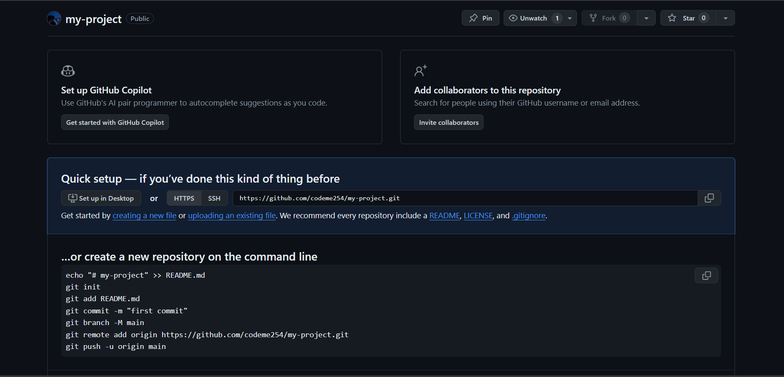

GitHub is a hosting platform for git repositories. We can put our own git repos on GitHub and access them from anywhere in the world and share them with people around the world. There are tons of competing tools that provide similar hosting and collaboration features including GitLab, BitBucket etc. GitHub is however the most popular one. GitHub offers its basic services for free! While GitHub does offer paid Team and Enterprise tiers, the free tier allows for unlimited public and private repos, unlimited collaborators and more.
Why Use GitHub
Collaboration - GitHub makes it easier to work on a project with other people.
Open source projects - GitHub is the home of open source projects on the internet. Projects such as React, Postgresql, tensorflow et.c are hosted on GitHub, if you plan to contribute to open source, knowledge of GitHub is essential.
exposure - your GitHub profile showcases your own projects and contributions to other projects. It can act as a resume that employers will consult when they want to hire you.
Stay up to date - being active on GitHub is the best way to stay up to date with trends in your favorite language or framework or tool.
Cloning GitHub Repos
So far, we have created our own git repos from scratch, but often times, we want to get a local copy of an existing repo (hosted on a service like GitHub) instead. To do this, we can clone a remote repository hosted on GitHub or similar websites, all we need is a URL that we can tell git to clone for us. To clone a repository from GitHub or a similar service, we use the git clone command as follows:
git clone URL
Replace URL with the url of the repository you want to clone into your machine. For example: let's clone the popular repository Hiring without whiteboards which is a GitHub repository listing companies that don't follow the traditional whiteboard interviews in their hiring processes. To do this:
Open the GitHub repository (here) or really the repository you want to clone.
Copy the link to the repository from your browser's address bar.
On your machine, open the terminal or command prompt.
Navigate to the folder/directory where you want this project to be cloned into.
git will retrieve all the files associated with the repo and will copy them to your local machine, in addition, it initializes a new repo in your machine, giving you access to the full git history of the cloned project.
Creating a GitHub account
To unlock the full potential of GitHub, you need to register for an account if you don't have one which is a very simple process. All you have to do is visit https://github.com/ and supply your email address and pick your username. Tip: for the email address, use the email address you supplied to git during configuration. You can also use another email address and do a fresh email address configuration of your local git. For the username, you will need to be creative and come up with a unique username as GitHub doesn't allow sharing usernames. Use a password that is safe but easy to remember and then verify your account if asked and that's it!
Getting your project/code to GitHub
So far, we have been creating local git repositories. Now that we have a GitHub account, we can host these git repositories to GitHub. We can do this in one of the two ways:
1. Existing repo in our machine
Create a new repository in GitHub.
Connect our local repository (add a remote - more about remotes shortly).
Push our changes to GitHub.
2. Start from scratch
Create a brand-new repository on GitHub.
Clone it down to your machine.
Do some work locally on this repository.
Push your changes to GitHub.
Remote
Before we can push anything to GitHub, we need to tell git about our remote repository on GitHub. We need to set up a "destination" to push up to. In git, we refer to these 'destinations' as remote. Each remote is simply a url where the hosted repo lives. To view any existing remotes for your repo, you can run:
git remote
or, to get more verbose information, we pass the -v flag:
git remote -v
This just displays a list of remotes, if you haven't added any remotes yet, you won't see anything. Each remote has a name and a corresponding url. Let's run these commands against the repo we cloned earlier on hiring without whiteboards
For this project, we see that there is a remote called "origin" and the corresponding URL is "https://github.com/poteto/hiring-without-whiteboards".
We can create a remote using the command:
git remote add REMOTE_NAME REMOTE_URL
Replace REMOTE_NAME with what you would like to name your remote and REMOTE_URL with the URL of your remote (more about this shortly). A standard name for the remote is "origin", nothing special with the name, we can name our remote whatever we want if we are not okay with "origin".
We can also rename a remote using the command:
git remote rename OLD_NAME NEW_NAME
We can remove a remote using the command:
git remote remove REMOTE_NAME
Pushing changes to the remote
We use git push to publish changes to the remote. For this, we specify the remote we want to push up to and the specific local branch we want to push up to the remote:
git push REMOTE_NAME LOCAL_BRANCH_NAME
Replace REMOTE_NAME with the name of your remote and BRANCH_NAME with the name of the local branch you would like to publish. For example:
git push origin master
This will tell git to push the master branch to a remote called origin.
step-by-step guide to publish your project/code to GitHub
Let's put everything together by pushing a sample project from our local machine to GitHub.
Step 1: Get your project ready
You will first need some sort of project to push to GitHub, this doesn't have to be code, anything will really work, from your word docs, text files, videos you are editing, any digital media will work. Here is our project, which is just a simple story book with 4 chapters.
Step 2: Set up your local git repository
If your local project is not yet a git repository, you can convert it to a git repository:
Initialize a local repository
git init
Add all the files or specific files to the index/staging area
git add -A
or add the specific files you want to publish to the index using
Commit the changes in the staging area to your repository using git commit -m MESSAGE replace message with a suitable message describing what you've done.
Fill in the details in the page you are redirected to, fill in the name of the repository and optionally provide a description for your project.
Next check the public or private button depending on the visibility you would wish on your project where public means anyone on the internet can see the repository, private means tha you will choose who can see the repository.
Once you are done, at the very bottom, click the button labelled 'create repository'.
You should be redirected to a page similar to the one shown below:

Step 4: Configure remote in your local git repository
Next, we need to tell our git where the remote repository is. We use the command we learned earlier:
git remote add REMOTE_NAME REMOTE_URL
For now, let's leave the name of the remote to be 'origin'. As for the url, we can find it in the page we were redirected to when we successfully created the repository on GitHub. Copy this url and back in your project locally, run the command:
Lastly, push the local changes to GitHub using the git push command: We are supposed to specify the name of the remote and the name of the branch we want to push.
git push REMOTE_NAME BRANCH_NAME
Run the command git branch to see which branches you have and which one you want to push. Let's say we want to push a branch called 'master', we know by now that our remote is called 'origin':
git push origin master
And if we visit our GitHub repository and refresh, we will see everything pushed there!
Assuming we had a branch called 'outline' and we want to push it to the origin remote:
git push origin outline
The -u flag in git push
The -u option of git push allows us to set the upstream of the branch we are pushing. Think of this as a link connecting our local branch to a branch on GitHub. With the current configuration every time we have a new change in 'master' for example, we will of course have to add and commit, but when pushing to GitHub, we must run the command:
git push origin master
We have to remind git that the content is being pushed to sync with the content in master branch at the remote repository. If we try to run:
git push
We will get an error:
To fix this, we need to supply the -u flag to the command:
git push -u origin master
From here, git will now remember where changes from the current local master branch should go, and thus we don't have to run the full command again, we can just run git push for this branch and everything will work.
The same can be done for all the other branches in your repository.